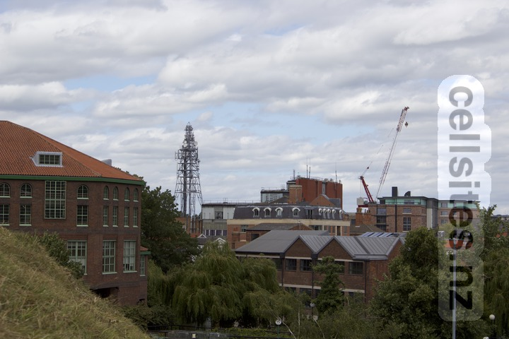
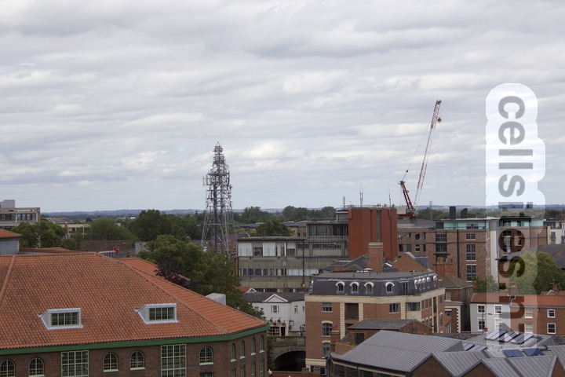

York Exchange Operators: EE, O2, Three and Vodafone. Telephone Exchange: York (MYYO) Think Broadband: York (MYYO) MBNL Mastdata O2 Mastdata Orange Mastdata Three Mastdata T-Mobile Mastdata Vodafone Mastdata Note there are antennas on the tower as well as the side of the exchange buildings.  